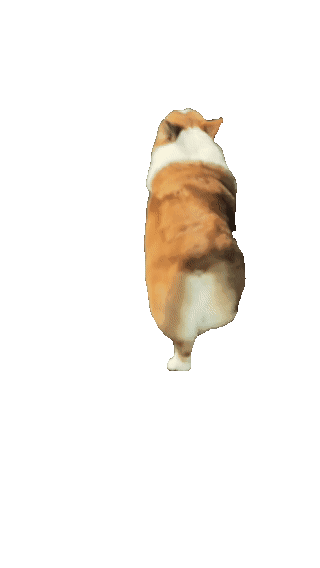
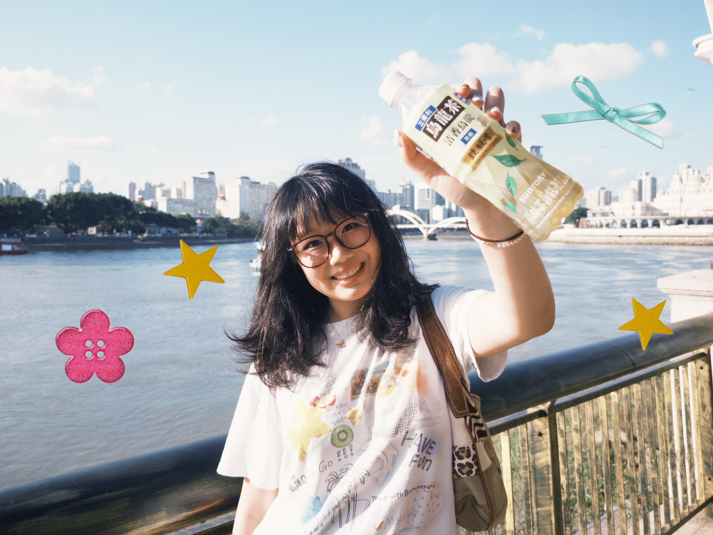

Hiii, I'm Xiwen! Welcome to my Personal User Manual:
I am a Year 3 student at NTU (Nanyang Technological University), pursuing a degree in Information Engineering and Media. With a strong interest in game design, Human-Computer Interaction (HCI), and AR/VR technologies, I consider myself a free spirit navigating the creative and technical intersection between engineering and design.
I have a huge soft spot for fluffy things and strawberry shortcakes, while frequently splitting my brain capacity between contemplating the boundaries of the universe and deciding what to eat next. Operating as a perpetual dialectical thinker, I firmly hold the belief that there are no absolute blessings or curses in this world.
This worldview fuels my urge to explore—to discover how much further this world can evolve, and to uncover who I can truly become in the future.
Oh, by the way, the corgi you see wandering around the page is my dog, Naonao. Feel free to pet him! :)